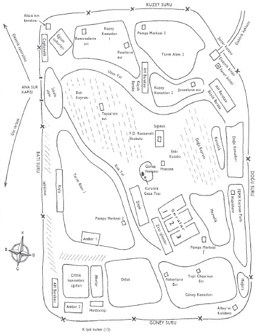

1. Slayt- İlk Koloni Yerleşimi’nin Planı (33˚, 74’K, 116˚ 71B)
Kuzey Amerika Karantina Periyodu Konulu Üçüncü Küresel Konferans’ta Sunulmuştur
İnsan Kültürlerini ve Çatışmalarını İnceleme Merkezi
New South Wales Üniversitesi, Hindi-Avustralya Cumhuriyeti
VS 16-21 Nisan 1003
Birinci Koloni, yak. VS 92
